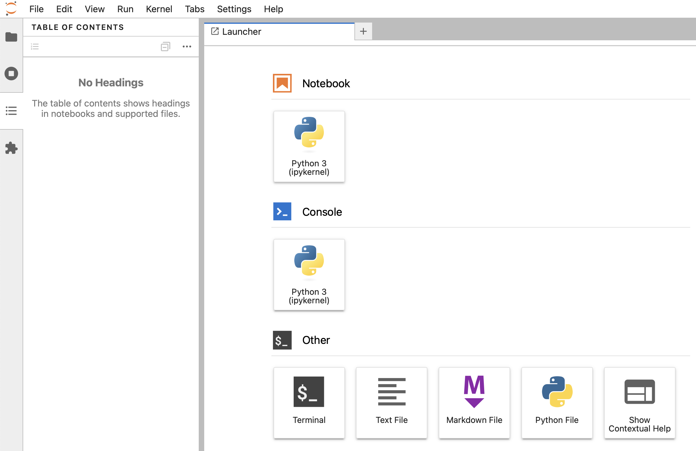
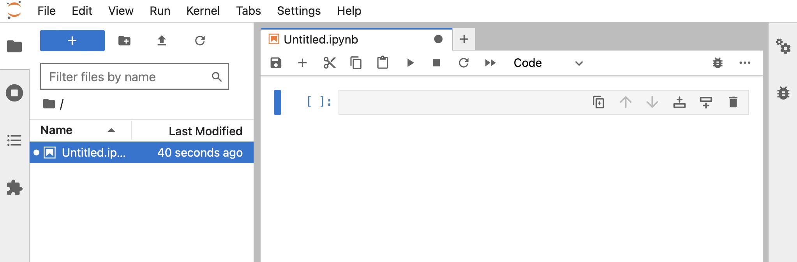

Setting Up Jupyter Lab On Mac
April 8, 2024Setting up Python on a Mac can by tricky. The number of options is big, and they might interact strangely. Also you have to remember which installation method you used once you want to change version or upgrade. This post should remind me how I did it 😉
Installing Python
There are many ways to install Python on Mac and to manage it’s versions:
* The Python installed on MacOS * brew
* Anaconda * pyenv
* …
What worked best for me is pyenv:
* Install it: brew install pyenv. I assume you have Homebrew installed…
* See the options and commands offered: pyenv
* List all Python versions available to pyenv: pyenv versions
* Install a version: pyenv install 3.12 (That’s the Python version I currently use)
* Set the version that is globally used: pyenv global 3.12
* Check what version is globally set: pyenv global or python --version
Create working directory
Create the directory in which you want to work in the context of your project. I keep all my coding projects under ~/git. This way I know that all the projects under ~/git don’t need to be backed up as they are in a git repo.
Example:
cd ~/git
mkdir my_python_project
cd my_python_project
Create a local env
In order to provide my project it’s own python environment I use Python’s Virtual Environments:
cd ~/git/my_python_project
python3.12 -m venv .venv
This way I have created an environement inside the .env sub-dir. To activate it use source .venv/bin/activate.
Note: As my .env sub-directory should not be in the git repo, it needs to be listed in the .gitignore file.
Install Jupyter Lab
Now that I have the Python environment I can install Jupyter. Make sure I am in the right directory and the Python environment is activated:
# Go in my project dir and activate it's Python environment
cd ~/git/my_python_project
source .venv/bin/activate
# Install Jupyter Lab in this environment
pip install jupyterlab
# Very often it asks me to upgrade pip itself
pip install --upgrade pip
# Start Jupyter Lab
jupyter lab
# Now wait a bit and your browser should open on http://localhost:8888/lab
Create a new notebook
Your browser should be open in a fresh Jupyter Lab environment: 
Click on Notebook > Python 3 and your first Notebook should be up & running:

To get going within Jupyter Lab, follow their User Guide.